Four ways to put an S3 bucket in front of a workload — flint-lite, flint-lean, flint-passthrough and flint-forge — with the multi-cluster and security consequences of each, the one durable store they all share, and how they compose.
flint puts a bucket in front of a workload four different ways. They are not four configurations of one thing and not four tiers of the same product: they are four different bargains, each coherent with itself, over one bucket. Three of them are file-shaped and share a format; the fourth is git-shaped, and stores a bare repository. What varies is how much the workload gets and how much machinery has to exist for it to get that.
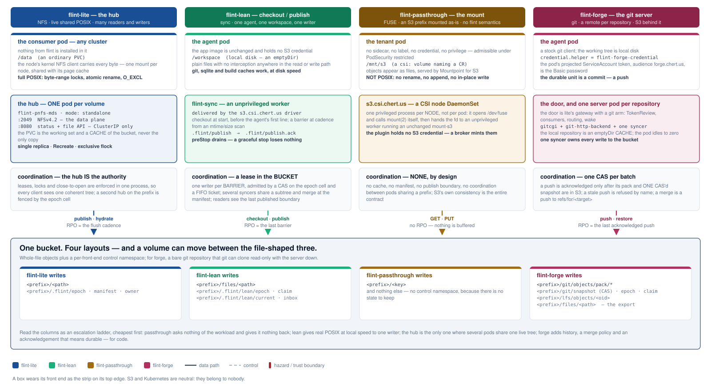
Read the columns as an escalation ladder, cheapest first. Passthrough asks nothing of the workload — nine lines of pod spec — and gives it nothing back beyond the objects: no POSIX, no coordination, no boundary. Lean gives a real local filesystem at disk speed to one writer, and a durable point that writer can name. The hub is the only one where several pods, in several clusters, can share one live tree with locks that mean something. Forge stands slightly apart: it is for code, its unit of durability is a commit, and what it adds is history, a merge policy the server enforces, and an acknowledgement that means the bytes are in S3.
The common floor is the bucket format, and it is what makes the file-shaped choice reversible. Lite, lean and passthrough all write whole-file objects; what differs is the .flint/ control namespace beside them, which exists to answer questions the object listing cannot — who holds the write lease, what the last coherent boundary contained, what the whole tree is for a restore. Passthrough writes no control namespace at all, which is exactly why it can be pointed at a prefix somebody else's tooling already owns. Forge's bucket is a bare git repository plus one CAS'd pointer, and it joins the family through its export: a ref's tree published, by the shipped lean binary, as a valid lean workspace. Because the file formats are common and mutually convertible, a volume that outgrows one front end can move to another rather than being re-plumbed — and page 11 shows that the better question is usually not which one, but which one for which data.
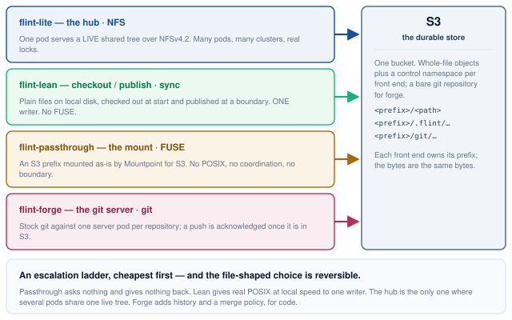
One pod serves real POSIX over NFSv4.2 to any number of pods in any number of clusters. The PVC beside it is a working set; an S3 prefix is the durable copy. A second listener exposes the same filesystem over HTTP for callers that cannot mount. One hub serves exactly one prefix — a project that needs several volumes runs several hubs.
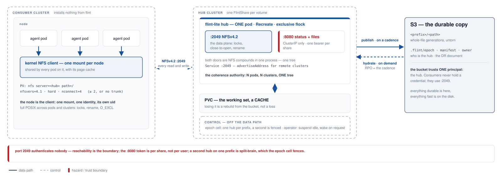
The hub's value and its constraint are the same fact. One process holds every lease, lock and open, so N pods across N clusters see one coherent tree — and that is why it is one pod, one replica, Recreate, behind an exclusive flock. Two hubs on one prefix would be split-brain, which the store-side epoch cell fences and the operator refuses up front. Consumers install nothing: the data path is the node's own kernel NFS client, one mount per node, shared by every pod on it along with its page cache.
The disk is a cache; the bucket is the copy. The hub flushes the working set to S3 on a cadence, so the recovery point is that cadence and losing the PVC is a rebuild rather than a loss. A cold read hydrates on demand and both doors say so rather than hanging — NFS parks the caller with NFS4ERR_DELAY, HTTP answers 503 + Retry-After. The two doors are secured differently, and only one of them has a credential. Port 2049 is AUTH_SYS, so the client asserts its own uid and reachability is the real boundary; port 8080 can rewrite every file in the share, so it stays ClusterIP-only, never joins the Service, and mounts no routes at all without a bearer token — 404, not 401. That token is per-share, not per-user, which page 7 takes up.
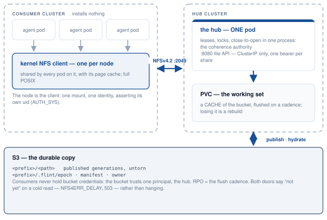
One hub can serve agents in several clusters at once. The wire is ordinary NFSv4.2 and the hub does not know, or care, how many clusters are on it — which is precisely the problem. Three things the protocol and the chart cannot supply become the fleet's responsibility, and every one of them fails silently if it is missed.
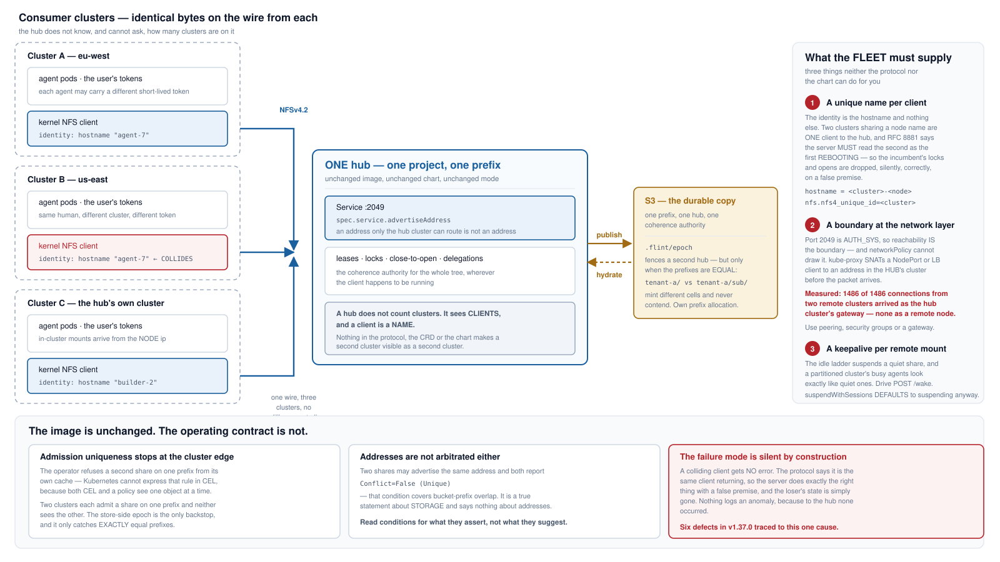
A hub does not count clusters — it sees clients, and a client is a name. The NFSv4 client identity is the hostname and nothing else, so two clusters that share a node name are one client to the hub, and RFC 8881 §18.35.5 requires the server to read the second as the first rebooting: the incumbent's locks and opens go, silently, correctly, on a false premise. Six defects in v1.37.0 traced to this one cause. Fix it with hostname = <cluster>-<node>, or the client-side kernel parameter nfs.nfs4_unique_id, which survives a rename.
The reachability boundary cannot be drawn where you would expect to draw it. kube-proxy SNATs a NodePort or LoadBalancer client to an address in the hub's own cluster before the packet arrives: measured on a three-cluster rig, 1486 of 1486 connections from two remote clusters arrived as the hub cluster's gateway, none as either remote node. Listing remote CIDRs in networkPolicy is an outage; listing the local one admits everyone. Use peering, security groups, or a gateway. And a partitioned cluster's busy agents look exactly like idle ones — suspendWithSessions defaults to suspending anyway, and even when set it only narrows the window, because leases expire. Drive POST /wake from the thing that actually knows whether work is happening.
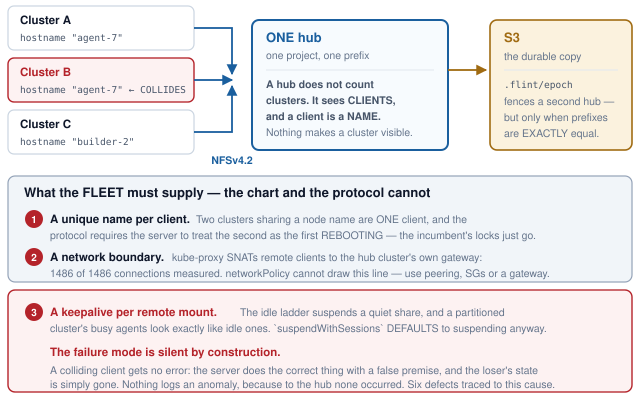
If the workspace fits on disk, no interception is needed at all. Materialise plain files before the agent's first line runs, publish changed files at cadence or at a boundary the agent declares, and keep the write authority out of the pod. Most of a FUSE front end's value at a fraction of its risk surface — same bucket, same engine, no kernel path.
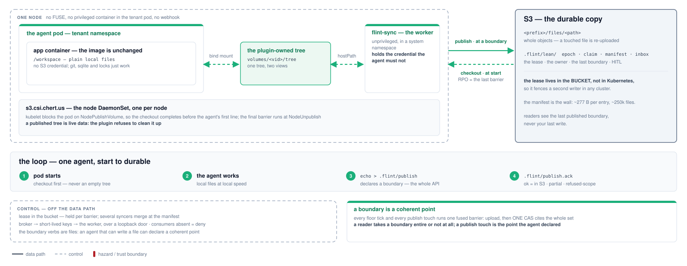
The ordering is the architecture. kubelet blocks every container in the pod on NodePublishVolume, so the checkout completes before the agent's first line runs — no init container, no readiness dance — and calls NodeUnpublishVolume only after every container has exited, which is where the final barrier goes. In between, the app touches plain files on real local disk with zero interception, so git, sqlite, hard links and index locks simply work. The app container holds no S3 credential; the unprivileged worker does, in a system namespace, behind a loopback door the app cannot reach.
The boundary verbs are files, because the workspace is the interface. An agent that can write a file can declare a coherent point — echo > .flint/publish — and learn when its bytes are durable, from .flint/publish.ack: ok means the bytes are in S3, refused-fenced means this syncer lost the lease and is saying so rather than leaving the agent waiting forever. No client library, no credential, no network path. Gated mode answers a different question from cadence: cadence asks how stale a reader may be, gated asks whether a reader may see half a logical change — and answers no, by uploading every changed file as a new version immediately (durable, and invisible) and installing the whole pending set with one CAS. Gated is refused without a lag bound, so unbounded staleness is impossible by construction rather than by convention.
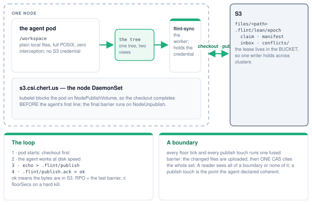
An S3 prefix, mounted into a pod as-is by Mountpoint for S3, with no flint semantics layered over it. There is no controller and no status, because nothing about a passthrough mount converges. What there is, is a careful answer to the question of who holds privilege — and the answer is: not the tenant.
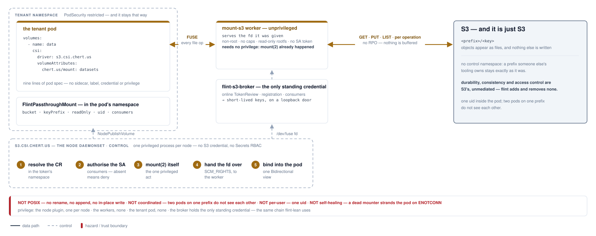
The trick is that the mount happens before the mounter runs. The node plugin opens /dev/fuse and calls mount(2) itself — the one act that genuinely needs privilege, done once, per node — then hands the file descriptor to an unprivileged worker pod over SCM_RIGHTS, where an unchanged mount-s3 serves it needing no privilege at all. The tenant pod is given nothing: no sidecar, no label, no webhook, no credential, no privileged container. It declares a csi: volume naming a CR in its own namespace and stays admissible under PodSecurity restricted.
Privilege did not disappear; it was concentrated. It lands in exactly three places, none of them a tenant namespace: the node plugin (privileged, one per node, holding no S3 credential and no Secrets RBAC), the worker pods (non-root, all capabilities dropped, read-only rootfs, no ServiceAccount token), and the broker (the only standing credential, and every issuance is TokenReview-verified and audit-logged). What a passthrough mount is not is worth stating as plainly as what it is: not POSIX — no rename, no append, no in-place modification at any setting; not coordinated — two pods on one prefix do not see each other; not per-user — the mount presents one uid, because NodePublish never sees the pod's securityContext; and not self-healing — if the mounter dies, running containers are stranded on ENOTCONN and the pod must be recreated. A workload that needs any of those wants flint-lean.
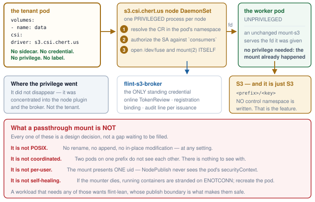
A git server per repository, with S3 as its only durable state. Agent pods are stock git clients; a stateless door turns the pod's own ServiceAccount token into a principal and routes to the repository's server pod, where real git — git-http-backend behind a small CGI runner of flint's, the standard hooks — serves from a local disk that is a cache, and one syncer owns every write to the bucket. The design's rule was to reinvent nothing git already does; what flint supplies is exactly what git lacks in a cluster with an object store behind it.
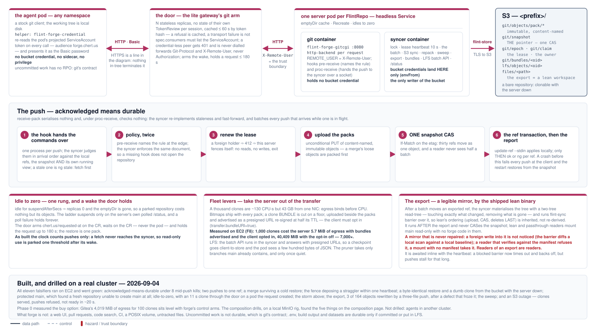
Acknowledged means durable, and the mechanism is one syncer per repository. The review's central finding was that receive-pack serialises nothing: under proc-receive git performs neither the old-oid check nor the fast-forward test for the commands it hands off, so two concurrent pushes to one ref run their hooks fully overlapped. The syncer therefore re-implements both checks — against the local ref, the bucket's snapshot and its own running view of the batch — renews the lease, uploads the packs, CASes the one mutable object (git/snapshot, which names every ref, pack and bundle) and applies the ref transaction, and only then reports ok or ng per ref. A stale push is refused by name; a merge is a push to refs/for/<target> that the server performs with merge-tree; a crash before the report fails every push in the batch at the client, and the restart restores from the snapshot. Policy is enforced twice from one document — pre-receive names the rule, the syncer enforces it — so a missing hook does not open the repository.
The levers are about taking the server out of the transfer. A thousand clones cost about 130 CPU-seconds but 43 GB from one NIC, so egress binds long before CPU does; measured on EC2 at 1,000 clones, the server's egress was 5.7 MiB with clone bundles advertised and the client opted in (transfer.bundleURI=true), against 40,409 MiB with the opt-in off — the storm falsifier's own arms; phase 0's 100-clone comparison put Gitea, the buy option, at 4,019 MiB, level with forge's controls. LFS goes the same way — the batch API runs in the syncer, which has the bucket credentials the door deliberately does not, and answers with presigned URLs, so a checkpoint never crosses the pod. Idle is one rung: no pushes for suspendAfterSecs and the replica count goes to zero; the door arms a wake annotation on the CR and holds the request, which on the cluster meant a clone through a parked repository completed in 11 s on a pod the request itself created. The export publishes a ref's tree as a real lean workspace by running the shipped flint-sync over it, after the report and never as a second writer of the snapshot.
The edges, stated as the drills left them. All eleven falsifiers ran on EC2 on 2026-09-04 and went green, two of them after finding a defect: a fresh repository could not create main at all, because the protection rule and the missing merge target closed on each other; and the export froze permanently once lean's own conditional upload parked on an etag it had not written. Nothing in-tree terminates TLS, so the pod's audience-bound token rides two cleartext hops inside the cluster; the X-Remote-User trust boundary is a NetworkPolicy the operator renders only when told where the door runs; the built idle clock counts pushes only, so read-only use is parked one threshold after its wake; and the server runs as root in both images. An export is a mirror that is never repaired — page 11.
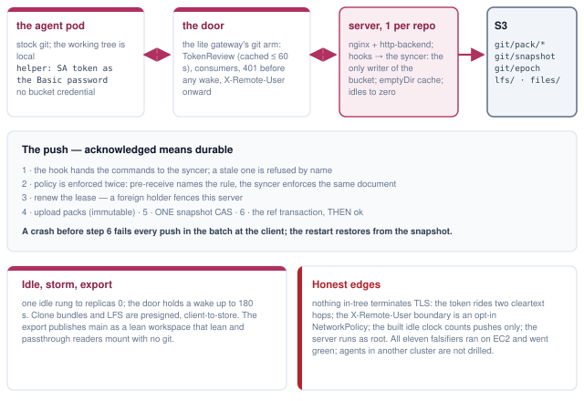
One human launches agents across clusters A, B and C. Each agent holds that user's token — short-lived, from an IdP, and possibly a different token in each cluster. This page answers the only question that matters for isolating one user's work from another's: what does storage actually check, and where could that token be presented if you wanted it to be?
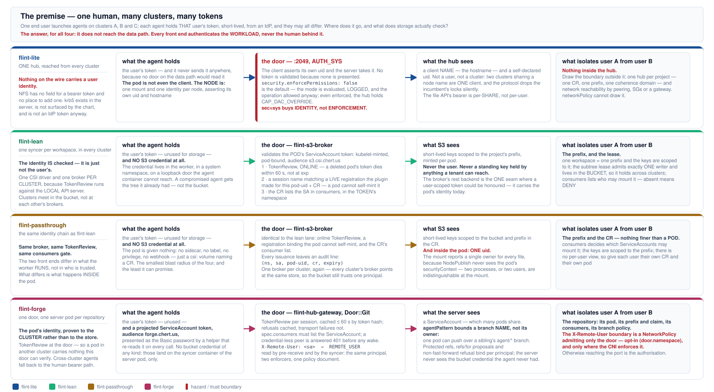
The answer, for all four, is that the user's token does not reach the data path. Every front end authenticates the workload, never the human behind it — so the fact that each agent may carry a different token is invisible to flint. For lean, passthrough and forge that is a feature: the enforced identity is the pod's ServiceAccount, kubelet-minted and pod-bound, so token churn upstream changes nothing. For lite it is a gap: nothing on the NFS wire carries a user identity, and there is no field to add one to.
flint-lite authenticates nobody on port 2049. AUTH_SYS means the client asserts its own uid and the server takes it, and the POSIX check is not a backstop either: security.enforcePermissions defaults to false, which evaluates the mode, logs the answer, and allows the operation anyway — and even enforced, the hub holds CAP_DAC_OVERRIDE. What sec=sys buys is identity, so ls -l tells the truth; it is not a boundary between tenants sharing a hub. So isolation must be drawn outside the hub, which the one-hub-per-project model already does: one CR, one prefix, one coherence domain, and a real network boundary around it.
flint-lean and flint-passthrough share one identity chain, and it is a strong one. The broker verifies the pod's token with an online TokenReview — a deleted pod's token dies within 60 seconds rather than at exp — requires a session name matching a live registration the node plugin made for that pod-uid and CR, which a pod cannot self-mint, and checks the CR's consumers list in the token's own namespace, where absent means deny. One broker per cluster is required, because TokenReview runs against the local API server: clusters meet in the bucket, not at each other's brokers. flint-forge borrows the shape at its door — the same TokenReview, cached at most 60 s by token hash, the same consumers gate — and then carries the ServiceAccount to the server as X-Remote-User, which pre-receive and the syncer both read as the principal. The honest limits: the principal is the ServiceAccount, which many pods share, so a branch pattern bounds a branch's name and not its owner; and anything that can reach the server's port can set that header itself, which is why the boundary is a NetworkPolicy admitting only the door — rendered only when door.namespace is set, and enforced only where the CNI enforces it.
| flint-lite | flint-lean | flint-passthrough | flint-forge | |
|---|---|---|---|---|
| What the agent holds | The user's token, and it never sends it anywhere — there is no door on the data path that would read one. It holds no bucket credential either. | The user's token, unused for storage, and no S3 credential at all. The credential lives in the worker, behind a loopback door the app container cannot reach. | The user's token, unused for storage, and no S3 credential at all. The pod is given nothing: no sidecar, no label, no privilege, no webhook. | The user's token, unused, and a projected ServiceAccount token with audience forge.chert.us, presented as the Basic password by a helper that re-reads it on every call. No bucket credential of any kind — those land on the syncer container of the server pod only. |
| The door, and what it validates | Nothing. Port 2049 is AUTH_SYS: the client asserts its own uid and the server takes it. security.enforcePermissions defaults to false, so the POSIX check logs and then allows; even enforced, the hub holds CAP_DAC_OVERRIDE. | flint-s3-broker. Online TokenReview of the pod's ServiceAccount token (a deleted pod's token dies within 60 s, not at exp); a session name matching a live registration the plugin made for that pod-uid and CR, which a pod cannot self-mint; and the CR's consumers list in the token's own namespace. | flint-s3-broker — the identical chain. Same TokenReview, same registration binding, same consumers gate, same audit line (ns, sa, pod-uid, cr, expiry). | flint-hub-gateway, Door::Git. TokenReview per session, cached at most 60 s by token hash — a refusal is cached, a transport failure is not; spec.consumers must list the ServiceAccount; a credential-less peer is answered 401 before any wake. It forwards Git-Protocol and X-Remote-User, never Authorization. |
| What storage sees | A client name — the hostname — and a self-declared uid. Not a user, and not a cluster: two clusters sharing a node name are one client. The file API's bearer token is per-share, not per-user. | Short-lived keys scoped to the project's prefix, minted per pod. Never the user, and never a standing key anything a tenant can reach holds. | Short-lived keys scoped to the bucket and prefix in the CR. Inside the pod the mount reports one uid for every file, because NodePublish never sees the pod's securityContext. | The server sees a ServiceAccount as REMOTE_USER, read by pre-receive and by the syncer — two enforcers of one policy document. Many pods share that ServiceAccount, so agentPattern bounds a branch name, not its owner. The bucket sees only the syncer. |
| What isolates user A from user B | Nothing inside the hub. Draw it outside: one hub per project (already the model — one CR, one prefix, one coherence domain) plus a real network boundary, since networkPolicy provably cannot draw it. | The prefix and the lease. One workspace is one prefix and the keys are scoped to it; the subtree lease admits exactly one writer and lives in the bucket, so it holds across clusters. | The prefix and the CR — nothing finer than a pod. consumers decides which ServiceAccounts may mount it. Give each user their own CR and their own pod. | The repository: its own pod, its prefix with a claim that refuses a foreign project, its consumers, and a per-principal branch policy. The X-Remote-User boundary is a NetworkPolicy admitting only the door — opt-in, and only where the CNI enforces it; otherwise reaching the port is the authorisation. |
Two practical questions for anyone running agents on more than one cluster: what do I have to install in each of them, and if one agent pod is fully compromised, what does the attacker now have? The four front ends answer both differently, and the cheapest to install is not the one with the smallest blast radius.
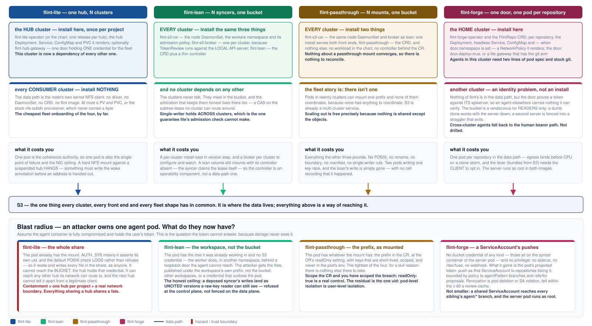
flint-lite has the cheapest fleet onboarding and the widest blast radius. Consumer clusters install nothing at all — the data path is the node's own kernel NFS client — but the hub cluster becomes a dependency of every other one, and a compromised pod already holds the mount. With AUTH_SYS and a log-only permission check, it reads and writes every file in the share as anyone. It cannot reach the bucket, because the hub holds that credential and the pod has none; that much is genuinely contained. Everything sharing a hub shares a fate, so size hubs by the blast radius you are willing to accept, not only by capacity.
flint-lean and flint-passthrough cost a per-cluster install and buy a much smaller radius. Each cluster runs the same CSI node driver and its own broker; no cluster depends on any other, and they meet only in the bucket — where the lean lease is a CAS no cluster can route around, which is the one guarantee lite's admission check cannot make. A compromised lean pod gets the tree it was already working in, published under its own prefix; it does not get the bucket, other workspaces, or a credential that outlives the pod. The honest ceiling is that lean refuses a deposed writer at the control plane, not on the data plane: its writes land as uncited versions that no coherent reader resolves, but a raw-key reader can still see them. Passthrough is the tightest, for a dull reason: there is nothing else there to take. The pod gets the prefix in the CR at the CR's readOnly setting, with short-lived scoped keys it never sees.
flint-forge installs in one cluster and makes the other clusters an identity problem rather than an install. The home cluster runs the operator, the door and one small pod per repository; agents there need stock git and two lines of pod spec. Nothing of flint's is in the data path elsewhere — but the door proves a token against its apiserver, so an agent in another cluster carries nothing it can verify, and falls back to the human bearer path. The bucket is a rendezvous for readers only: a dumb-protocol clone works with the server down, and a second server is fenced into a straggler that exits. A compromised forge agent gains no bucket credential and no privilege; it gains its ServiceAccount's push rights, within policy, revoked by pod deletion within the review cache. Not smaller: a shared ServiceAccount reaches every sibling's agent/* branch, and the server pod runs as root.
| flint-lite | flint-lean | flint-passthrough | flint-forge | |
|---|---|---|---|---|
| Installed in the home cluster | The operator (or one chart release per hub), and the Deployment, Service, ConfigMap and PVC it renders. Optionally the hub gateway. | The CSI node DaemonSet, a broker, and the lean CRD plus a thin controller — the same list as every other cluster. | The CSI node DaemonSet and a broker, plus the CRD. There is no workload in the passthrough chart and no controller behind the CR. | The operator and the FlintRepo CRD; per repository, the Deployment, headless Service, ConfigMap and — when door.namespace is set — a NetworkPolicy; and the door, either deployed by the chart or a lite gateway that has the git arm. |
| Installed in every consumer cluster | Nothing. The data path is the node's own kernel NFS client; at most a PV and PVC, or the stock nfs-subdir provisioner, which never carries a byte. | The same three components, in every cluster. The broker must be local, because TokenReview runs against the local API server. | The same CSI driver and broker, in every cluster. One CSI install serves lean and passthrough together. | Nothing in the data path — stock git and two lines of pod spec. But the door proves tokens to its own apiserver, so an agent elsewhere must use the human bearer path. Not drilled. |
| Cross-cluster dependency | The hub cluster becomes a dependency of every other one, and holds the only copy of the live tree that is not in S3. | None. Clusters never talk; they meet in the bucket, where a CAS on the lease keeps them honest — so single-writer holds across clusters. | None. S3 is already a multi-cluster service, and nothing is shared except the objects. | The home cluster holds every repository's server and its door. The bucket is a rendezvous for readers only — a dumb clone works with the server down — never for a second server, which the lease fences. |
| Blast radius of one compromised agent pod | The whole share. The pod has the mount, asserts its own uid, and the permission check logs rather than refuses. It cannot reach the bucket — the hub holds that credential. Everything sharing a hub shares a fate. | The workspace, not the bucket. The attacker gets the tree it was working in, published under its own prefix. The honest ceiling: a deposed writer is refused at the control plane, not fenced on the data plane, so its writes land as uncited versions a raw-key reader can still see. | The prefix, as mounted, at the CR's readOnly setting — the tightest of the four, because there is nothing else there to take. Scope the CR and you have scoped the breach. | A ServiceAccount's push rights, within policy. No bucket credential and no privilege; revocation is pod deletion or SA rotation, felt within the 60 s review cache. Ceiling: a shared ServiceAccount reaches every sibling's agent/* branch, and the server pod runs as root. |
Underneath all four front ends there is one durable store, and it is S3. Everything above it — the hub's disk, the lean workspace, the FUSE mount, the forge clone and its server's local repository — is a way of reaching bytes whose home is the bucket. Two views of those bytes exist, with different contracts, and confusing them is the most common way to get hurt here.
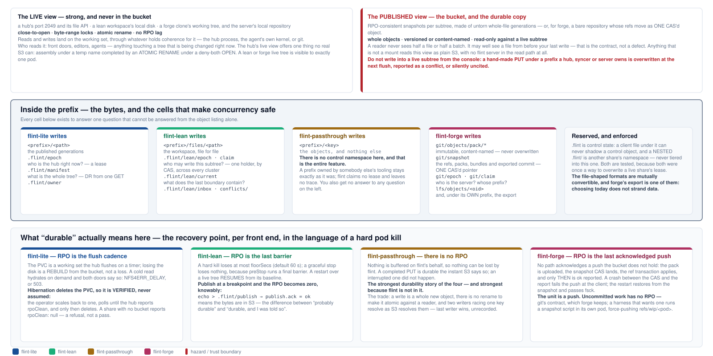
The live view is strong and is never in the bucket. It is a hub's port 2049 and file API, a lean workspace's local disk, or a forge clone's working tree: close-to-open, byte-range locks, atomic rename, no RPO lag. The published view is the bucket: RPO-consistent snapshots per subtree, made of untorn whole-file generations — or, for forge, a bare repository whose refs move as one CAS'd object, so a reader never sees half a batch either. A reader of the bucket never sees half a file, and may well see a file from before your last write — that is the contract, not a defect. Do not write into a live subtree from the console: a hand-made PUT under a prefix a hub, syncer or server owns is overwritten at the next flush, reported as a conflict, or silently uncited — and under an export prefix, as page 11 shows, it simply stands.
Every control cell exists to answer a question the object listing cannot. Who is the hub right now, and may I become it — the epoch lease. What does the last coherent boundary contain — the manifest, which also makes disaster recovery a single GET rather than a crawl. Who owns this prefix, and did state loss change that — the claim and owner cells. Forge's git/snapshot answers all three of its own at once — the refs, the packs, the bundles, the exported commit — and its git/epoch is the same kind of lease under a different key, which is exactly why two products on one prefix never contend. Passthrough writes none of them, which is why it can be pointed at a prefix another system already owns and leaves no trace when the pod goes away; it also gets no answer to any of those questions.
The recovery point differs, and it is worth stating in the language of a hard pod kill. Lite loses up to the flush cadence, and its PVC is a cache — losing the disk is a rebuild. Lean loses at most floorSecs (default 60 s), zero on a graceful stop, and zero-and-acknowledged if the agent declares a boundary. Passthrough has no recovery point at all, because nothing is buffered on flint's behalf: a completed PUT is durable and an interrupted one did not happen. Forge's is the last acknowledged push — no path acknowledges a push the bucket does not hold, which eight mid-push pod kills on EC2 left standing with fsck --strict clean — and uncommitted work has none, which is git's contract.
| flint-lite | flint-lean | flint-passthrough | flint-forge | |
|---|---|---|---|---|
| Object keys | <prefix>/<path> — the published generations, as untorn whole-file objects. | <prefix>/files/<path> — the workspace, file for file. | <prefix>/<key> — the objects, and nothing else. | <prefix>/git/objects/pack/* — immutable, content-named packs; <prefix>/lfs/objects/<oid>; and, under its own prefix, the export as a lean workspace. |
| Control namespace | .flint/epoch (who is the hub now), .flint/manifest (the whole tree, for DR from one GET), .flint/owner. | .flint/lean/epoch and claim (who may write this subtree), manifest, inbox, conflicts/. | None, deliberately. A prefix another system already owns stays exactly as it was, and no trace is left when the pod goes away — but you get no answer to any question on the left. | git/snapshot — the one CAS'd pointer naming every ref, pack, bundle and the exported commit; git/epoch (the server's lease) and git/claim (the owning project). Note the key: forge and lean arbitrate on different cells. |
| Recovery point after a hard kill | The flush cadence. The PVC is a cache: losing it is a rebuild from the bucket, not a loss. | The last barrier — at most floorSecs (default 60 s), zero on a graceful stop, and zero and acknowledged if the agent declares a boundary. | None — nothing is buffered on flint's behalf. A completed PUT is durable; an interrupted one did not happen. | The last acknowledged push: ok means the pack and the snapshot are in S3. Uncommitted work has no recovery point, by git's contract. |
| What a reader of the bucket sees | RPO-consistent whole-file snapshots. The live view is port 2049, and it is never in the bucket. | The last published boundary. In gated mode a reader sees the whole change or none of it. | Whatever S3 currently holds, with S3's own consistency and nothing added. | A bare repository: git clone over the dumb protocol works read-only with the server down, and every ref it sees was acknowledged. |
Seven questions, asked of each front end in turn: how a writer proves who it is, what protects the wire, what a merely-reachable peer can do, what keeps tenants apart, whether two sessions on one project can hold different rights, what an attacker who owns an agent pod gains, and whether the posture fails closed under operator error. Every cell is a claim the pages before this one already made, or a verified cell of the approach radar; none is a score.
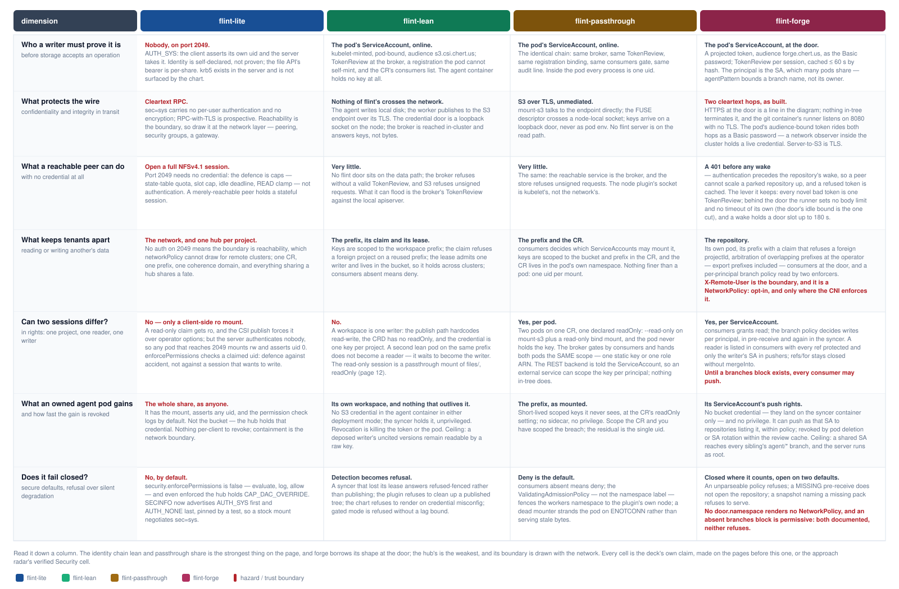
Read it down a column. The chain lean and passthrough share is the strongest thing on the page: the pod's ServiceAccount, kubelet-minted and pod-bound, verified online by a broker that also demands a registration the pod cannot self-mint and a consumers entry in the token's own namespace, exchanged for short-lived keys scoped to one prefix that the agent container never holds. Forge borrows the first half of that shape at its door — the same TokenReview, cached at most 60 s — and then differs in what happens next: the principal is carried to the server as a header, which makes the network between door and server a trust boundary, and nothing in-tree terminates TLS, so the token itself rides both hops in the clear. The hub's is the weakest: port 2049 proves nothing, the permission check logs by default, and the boundary has to be drawn with the network, which networkPolicy cannot do for remote clusters.
None of the four knows the human. A user's read-only role becomes a read-only session only when whatever launches the pod picks the ServiceAccount, or sets the mount flag, from that role. Kubernetes lets anyone who can create pods in a namespace use any ServiceAccount in it, so the reader and the writer need separate namespaces or an admission policy that binds user to ServiceAccount; flint never sees that decision. Given it, the row above holds: two sessions with different rights on one project work on forge and on passthrough, are a mount flag the server cannot back on lite, and on lean are a composition with a passthrough reader. Three of the four were put on the wire on 2026-09-05: on forge a reader and a writer on one repository, refused and allowed per ServiceAccount, with the X-Remote-User boundary shown to hold only behind the operator's NetworkPolicy — delete it and a forged header merges; on passthrough two pods on one mount, separated only by the read-only flag, both drawing the same key; and on lite a krb5p mount that proves the user and enforces none of their rights, even in enforce mode. Lean's single writer is by construction, undrilled.
Two defaults are worth knowing before the first install. On lite, security.enforcePermissions is false, and a stock mount negotiates sec=sys; that is identity, not enforcement. On forge, a chart with no door.namespace renders no NetworkPolicy, so the X-Remote-User boundary is silently absent, and a repository with no branches block is permissive, so any listed consumer may move main. Both are documented; neither refuses. Lean and passthrough fail closed where it counts — a syncer that lost its lease answers refused-fenced rather than publishing, an absent consumers list means deny, and the workers namespace is fenced by an admission policy rather than a label — and forge does too on its hooks: an unparseable policy refuses, a missing pre-receive does not open the repository, and a snapshot naming a pack the bucket lacks refuses to serve.
| Question | flint-lite | flint-lean | flint-passthrough | flint-forge |
|---|---|---|---|---|
| Who a writer must prove it is | Nobody, on port 2049. AUTH_SYS: the client asserts its own uid and the server takes it. The file API's bearer is per-share. krb5 exists in the server and is not surfaced by the chart. | The pod's ServiceAccount, online. TokenReview at the broker, a registration the pod cannot self-mint, and the CR's consumers list. The agent container holds no key at all. | The pod's ServiceAccount, online. The identical chain: same broker, same TokenReview, same registration binding, same consumers gate. Inside the pod every process is one uid. | The pod's ServiceAccount, at the door. A projected token, audience forge.chert.us, as the Basic password; TokenReview per session, cached at most 60 s. The principal is the SA, which many pods share. |
| What protects the wire | Cleartext RPC. sec=sys carries no per-user authentication and no encryption; RPC-with-TLS is prospective. Reachability is the boundary. | Nothing of flint's crosses the network. The agent writes local disk; the worker publishes to the S3 endpoint over its TLS; the credential door is a loopback socket on the node. | S3 over TLS, unmediated. mount-s3 talks to the endpoint directly; the FUSE descriptor crosses a node-local socket; keys arrive on a loopback door. | Two cleartext hops, as built. Nothing in-tree terminates TLS; the git container's runner listens on 8080 without it. The pod's token rides both hops as a Basic password. Server-to-S3 is TLS. |
| What a credential-less peer can do | Open a full NFSv4.1 session. Port 2049 needs no credential; the defence is caps — state-table quota, slot cap, idle deadline, READ clamp — not authentication. | Very little. No flint door sits on the data path; the broker refuses without a valid TokenReview, and S3 refuses unsigned requests. | Very little. The same: the reachable service is the broker, and the store refuses unsigned requests. | A 401 before any wake, and a refused token is cached. The lever it keeps: every novel bad token is one TokenReview; behind the door the runner sets no body limit and no timeout of its own (the door's idle bound is the one cut), and a wake holds a door slot up to 180 s. |
| What keeps tenants apart | The network, and one hub per project. No auth on 2049 means the boundary is reachability, which networkPolicy cannot draw for remote clusters. | The prefix, its claim and its lease. Keys are scoped to the workspace prefix; the claim refuses a foreign project; the lease admits one writer and lives in the bucket; consumers absent means deny. | The prefix and the CR. consumers decides who may mount it, keys are scoped to the CR's bucket and prefix. Nothing finer than a pod: one uid per mount. | The repository. Its pod, its prefix with a claim that refuses a foreign project, prefix arbitration at the operator, consumers at the door, a per-principal branch policy read by two enforcers. X-Remote-User is the boundary, and it is an opt-in NetworkPolicy. |
| Can two sessions differ in rights? | No — only a client-side ro mount. A read-only claim gets ro, and the CSI publish forces it over operator options; but the server authenticates nobody, so any pod that reaches 2049 mounts rw and asserts uid 0. enforcePermissions checks a claimed uid: defence against accident, not against a session that wants to write. | No. A workspace is one writer: the publish path hardcodes read-write, the CRD has no readOnly, and the credential is one key per project. A second lean pod on the same prefix does not become a reader — it waits to become the writer. The read-only session is a passthrough mount of files/, readOnly (page 11). | Yes, per pod. Two pods on one CR, one declared readOnly: --read-only on mount-s3 plus a read-only bind mount, and the pod never holds the key. The broker gates by consumers and hands both pods the same scope — one static key or one role ARN. The REST backend is told the ServiceAccount, so an external service can scope the key per principal; nothing in-tree does. | Yes, per ServiceAccount. consumers grants read; the branch policy decides writes per principal, in pre-receive and again in the syncer. A reader is listed in consumers with every ref protected and only the writer's SA in pushers; refs/for stays closed without mergeInto. Until a branches block exists, every consumer may push. |
| What an owned agent pod gains | The whole share, as anyone. It has the mount, asserts any uid, and the permission check logs by default. Not the bucket. Nothing per-client to revoke. | Its own workspace, and nothing that outlives it. No S3 credential in the agent container; the sidecar holds it, unprivileged. Ceiling: a deposed writer's uncited versions remain readable by a raw key. | The prefix, as mounted. Short-lived scoped keys it never sees, at the CR's readOnly setting. The residual is the single uid. | Its ServiceAccount's push rights. No bucket credential — they land on the syncer container only — and no privilege; revoked by pod deletion within the review cache. Ceiling: a shared SA reaches every sibling's agent/* branch; the server runs as root. |
| Does it fail closed? | No, by default. security.enforcePermissions is false; even enforced the hub holds CAP_DAC_OVERRIDE. SECINFO advertises AUTH_SYS first and AUTH_NONE last, pinned by a test. | Detection becomes refusal. A syncer that lost its lease answers refused-fenced; the plugin refuses to clean up a published tree; the chart refuses to render on credential misconfig; gated mode is refused without a lag bound. | Deny is the default. consumers absent means deny; the ValidatingAdmissionPolicy — not the namespace label — fences the workers namespace; a dead mounter strands the pod rather than serving stale bytes. | Closed on its hooks, open on two defaults. An unparseable policy refuses; a missing pre-receive does not open the repository; a snapshot naming a missing pack refuses to serve. No door.namespace renders no NetworkPolicy; an absent branches block is permissive. |
The front ends are not alternatives to pick between once. A workload has several kinds of data, each kind has a best door, and one pod can hold all of them at once — a forge clone, a lean workspace, a passthrough mount, a hub share — because each lands in its own prefix of one bucket. This page states the rule that keeps that safe, and what the composition drills of 2026-09-04 found when the rule was tested rather than assumed.
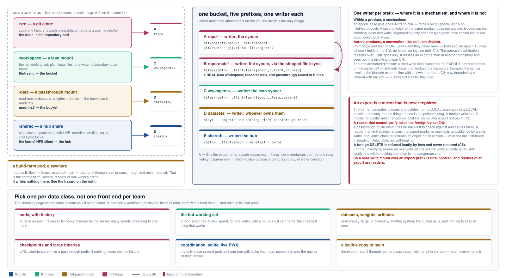
The composition is in the reading, never the writing. The legal shape has one writer per prefix: the syncer writes the repository's prefix and, through the shipped flint-sync, its export prefix — a real lean workspace, files/ beside .flint/lean/ — which lean and passthrough readers mount read-only with no git in the pod; a lean sidecar writes its own workspace prefix; the hub writes its share; a passthrough mount reads a prefix somebody else owns — aimed at the export's files/, so it never sees the control directory beside it. The only bridge between prefixes is the export, and it runs one way. Every file-shaped front end publishes plain whole-file objects, so a passthrough reader can read what any of them published; that is the substrate the whole page rests on, and page 9 already drew it.
One writer per prefix is a mechanism within a product and a convention across them. Within forge, or within lean, a second writer of the same prefix does not acquire: it observes the standing lease and waits, superseding only after six quiet polls have shown the holder dead — drilled both ways. Across the two, the cells are disjoint: forge arbitrates on git/epoch, lean on .flint/lean/epoch, so a forge server and a lean sidecar pointed at one prefix both acquire epoch 1 under different holders, and nothing 412s, fences, or logs a line (drill C1). The operator's arbitration reasons over FlintRepos only, on exact prefix equality: it refuses an export aimed at another repository's prefix and sees nothing involving a lean CR. The one direction that is arbitrated — a read-write lean sidecar on the export prefix contends on the same cell — used to wedge the repository itself, because the syncer awaited the blocked export inline with its own heartbeat; that is fixed by a bounded timeout with backoff (C2), and the residual is that pushes still stall for that long.
An export is a mirror that is never repaired. The barrier computes what to upload and delete from a local scan against a local baseline, so a foreign write into the export prefix is not noticed by any later export (C3). Every reader that cannot verify still takes the foreign bytes — a passthrough or lite mount has no manifest to check against. A reader that verifies now refuses, because the export marks its manifests as published by a sole writer and lean's checkout refuses an object off its citation; the drill first found lean adopting it, and 78c4445e is the fix (C4). The divergence is detectable but not self-healing — and only for a manifest published with that mark: an export written before the fix stays adoptable until it publishes again. A foreign delete is refused loudly by lean and never restored (C5). For the reader that cannot verify, an overwrite stands silently while a delete fails loudly: the milder-looking operation is the dangerous one. So a read-write mount over an export prefix is unsupported, readers of an export are readers, and the next mechanism the design names is a single well-known claim cell per prefix that every product writes and reads.
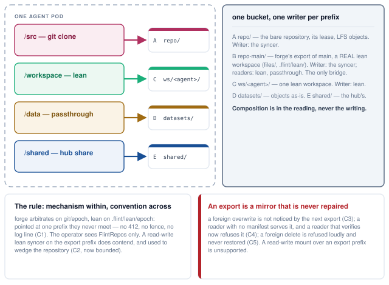
Ten dimensions, four columns. Read it down a column rather than across a row: each front end is coherent with itself, and the rows that look like weaknesses are usually the price of a strength two rows up. Then read it against page 11, because the last row names a data class, not a team.
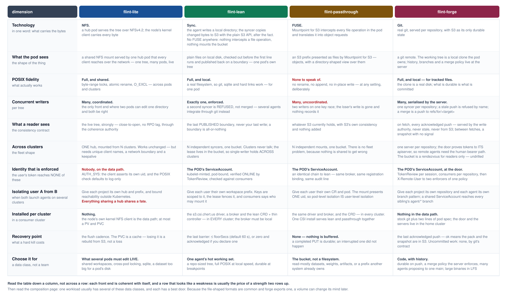
The short form. Choose flint-lite for what several pods must edit live — shared workspaces, cross-pod locking, sqlite, a dataset larger than a pod's disk, or anything needing a filesystem two pods can both see. Choose flint-lean for one agent's hot working set: a repo-sized tree that fits on disk, full POSIX at local speed, and a durable point the agent can name. Choose flint-passthrough when you want the bucket rather than a filesystem — read-mostly datasets, weights, artifacts, or a prefix another system already owns that you want visible inside a pod without changing it. Choose flint-forge for code with history: durable on push, a merge policy the server enforces, many agents proposing to one main, and large binaries in LFS.
The multi-cluster and security rows are the ones most often decided late and regretted. If one user's agents must be isolated from another's, none of the four will do it for you inside the data path: the unit of isolation is the prefix, and the thing that enforces it is a network boundary around a hub, a broker scoping short-lived keys to a CR, or a door and a branch policy around a repository. Decide the prefix layout first and the front ends second — plural, because a workload usually has several data classes and each has a best door. And because the file-shaped formats are common and forge exports one, a volume can change its mind later — which is the strongest argument for starting with the cheapest bargain that works rather than the most capable one.
| Dimension | flint-lite | flint-lean | flint-passthrough | flint-forge |
|---|---|---|---|---|
| What the pod sees | A shared NFS mount served by one hub pod that every client reaches over the network — one tree, many pods, live. | Plain files on local disk, checked out before the first line runs and published back on a boundary — one pod's own tree. | An S3 prefix presented as files by Mountpoint for S3 — objects, with a directory-shaped view over them. | A git remote. The working tree is a local clone the pod owns; history, branches and a merge policy live at the server. |
| POSIX fidelity | Full, and shared. Byte-range locks, atomic rename, O_EXCL — across pods and clusters. | Full, and local. A real filesystem, so git, sqlite and hard links work — for one pod. | None to speak of. No rename, no append, no in-place write, at any setting. | Full, and local — for tracked files. The clone is a real disk; what is durable is what is committed. |
| Concurrent writers per tree | Many, coordinated. The only front end where two pods can edit one directory and both be right. | Exactly one, enforced. A second syncer is refused, not merged; several agents integrate through a git host instead. | Many, uncoordinated. Two writers on one key race; the loser's write is gone and nothing records it. | Many, serialised by the server. One syncer per repository; a stale push is refused by name; a merge is a push to refs/for/<target>. |
| What a reader sees | The live tree, strongly — close-to-open, no RPO lag, through the coherence authority. | The last published boundary, never your last write; gated mode makes it all-or-nothing. | Whatever S3 currently holds, with S3's own consistency and nothing added. | On fetch, every acknowledged push — served by the write authority, never stale, never from S3. Between fetches, a snapshot with no signal. |
| Across clusters | ONE hub, mounted from N clusters. Works unchanged — but needs unique client names, a network boundary and a keepalive. | N independent syncers, one bucket. Clusters never talk; the lease lives in the bucket, so single-writer holds across clusters. | N independent mounts, one bucket. There is no fleet problem, because nothing is shared to get wrong. | One server per repository in the home cluster. The door proves tokens to its own apiserver, so remote agents need the human bearer path; the bucket is a rendezvous for readers only. Not drilled. |
| Identity that is enforced (the user's token reaches none of these) | Nobody, on the data path. AUTH_SYS: the client asserts its own uid, and the POSIX check defaults to log-only. | The pod's ServiceAccount — kubelet-minted, pod-bound, verified online by TokenReview and checked against consumers. | The pod's ServiceAccount — an identical chain to lean: same broker, same registration binding, same audit line. | The pod's ServiceAccount, at the door — TokenReview per session, consumers per repository, then X-Remote-User to two enforcers of one policy. |
| Isolating user A from user B | Give each project its own hub and prefix, and bound reachability outside Kubernetes. Everything sharing a hub shares a fate. | Give each user their own workspace prefix. Keys are scoped to it, the lease fences it, and consumers says who may mount it. | Give each user their own CR and pod. The mount presents one uid, so pod-level isolation is user-level isolation. | Give each project its own repository and each agent its own branch pattern; a shared ServiceAccount reaches every sibling's agent/* branch. |
| Installed per consumer cluster | Nothing. The node's own kernel NFS client is the data path; at most a PV and PVC. | The CSI driver, a broker, and the lean CRD plus thin controller — in every cluster (the broker must be local). | The CSI driver, a broker and the CRD, in every cluster. One CSI install serves lean and passthrough together. | Nothing in the data path. Stock git plus two lines of pod spec; the door and the servers live in the home cluster. |
| Recovery point | The flush cadence. The PVC is a cache — losing it is a rebuild from S3, not a loss. | The last barrier: at most floorSecs (default 60 s), or zero and acknowledged if you declare one. | None — nothing is buffered. A completed PUT is durable; an interrupted one did not happen. | The last acknowledged push — ok means the pack and the snapshot are in S3. Uncommitted work: none, by git's contract. |
| Choose it for | What several pods must edit LIVE. Shared workspaces, cross-pod locking, sqlite, a dataset too big for a pod's disk. | One agent's hot working set. A repo-sized tree, full POSIX at local speed, durable at breakpoints. | The bucket, not a filesystem. Read-mostly datasets, weights, artifacts, or a prefix another system already owns. | Code, with history. Durable on push, a merge policy the server enforces, many agents proposing to one main; large binaries in LFS. |